Table of content
- Introduction
- My Experience
- UI design
- Wireframes
- Screen Mockup
- testing
- Conclusions
- References
Introduction:-
This is the assessment of Web-development for L4 students of UoN. In this assessment we were given the web development project. For which we have to develop a webpage of six pages. In this assessment i have written html and css codes to develop th pages.There are altogether six pages which contains the further details of student. These pages contains details of the person including his/her cv, social medias links and contact details. It describes the biodata pf the person. The page should be attractive, user friendly.It should include all the content that were taught in the first term of first year.This project is given for Bsc computing students.There are six pages and they are as:-
My Git hub url for this project is https://ram-esh.github.io/Web-Assessment/
- Home - It includes the links of all other pages.
- About - It includes the details of short biography of mine
- CV - It contains my cv.
- Social - It have my social media links like facebook, twitter, etc.
- Contact - It contains my google map location and feedback form.
- Report - It contain the report of project.
My Experiences:-
I am the student from the science background and I am new to this field and I have totally new experience while doing this project. This was my first professional web design and I faced many problems during the coding of the pages. As I was new to the HTML and CSS I faced many problems but I managed to do the project before time. I was totally new to this course and some I managed to learn these subjects . The whole credits goes to the study environment of my college and hardworking teachers. The learning environment of my college is very effective and peaceful. At first starting the college, I was known to these development methods and I worked really hard for the module. This changed my point of view towards the web and css. I used to learn HTML in class 8 and 9. Now while studing in UoN ,this recreated my memory and I was able to remember some of my tasks done at that time. After learning the HTML and CSS I am able to do make basic web pages using various techniques. For this assessment I take help of many senios and my teachers . My teachers were like god form me. They
helped me with may all problems that I faced during the develpoment of this project.
The group work played important role in my project develpoment. My team members were friendly, co-operative and helping. They helped me alot with my problems. I worked with my team for design work, it helped me very much while desiging my wireframes. Workig with team helped me to do creative works and made me self-confident. It improved my writing, learning skills, and helped me to think critically gor better results.
The group work played important role in my project develpoment. My team members were friendly, co-operative and helping. They helped me alot with my problems. I worked with my team for design work, it helped me very much while desiging my wireframes. Workig with team helped me to do creative works and made me self-confident. It improved my writing, learning skills, and helped me to think critically gor better results.
UI Design:-
I researched many online websites to make a intersting webpage for my assessment. During this I found many attractive and responsive websites from where i was in fluenced .The influences of these sites can be seen in my web page . I have taken some design ideas from these websites. It very hard to finilize the design idea. They all have the different design and UI interfaces. they had many advantages and disadvantages of these UI designs. My plan was to improve the UI designs and make a attractive and responsive design. Here are the screenshots of the UI design that I was influenced by: They are the website of my college i.e NAMI college http://nami.edu.np/ and one of the ISP company of Nepal which is WOrldlink communication https://worldlink.com.np/.


 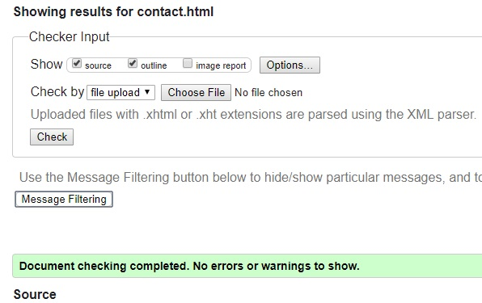
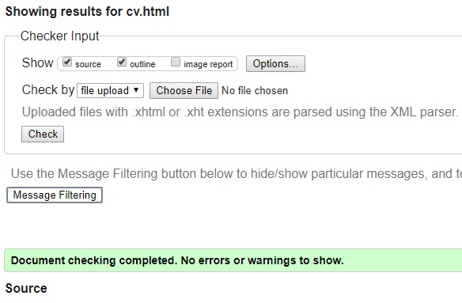
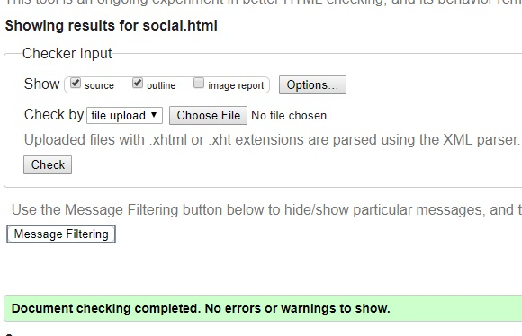
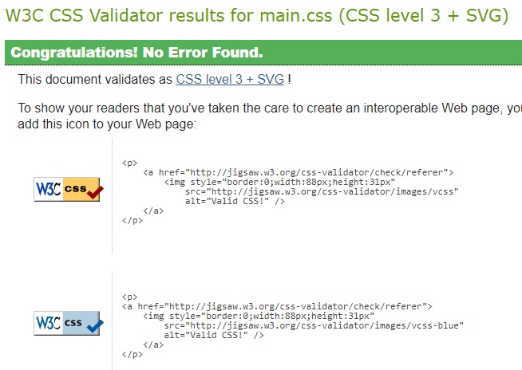
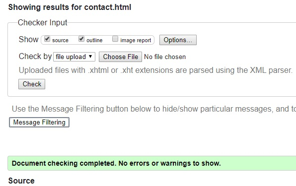
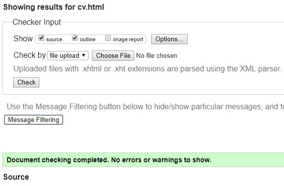
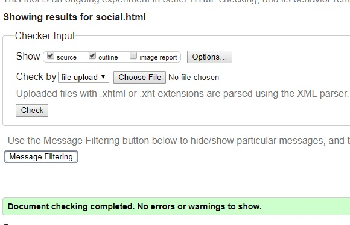
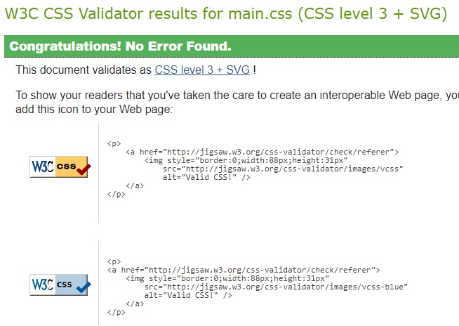
These is the screenshot of Worldlink communication which is one of the ISP in Nepal.
Wireframes:-
These are the wireframe of my web page which i developed after researching in different medias.
Screen Mockup:-
These are screen mockup of my website after the coding accordingly the wireframes.
Testing:-
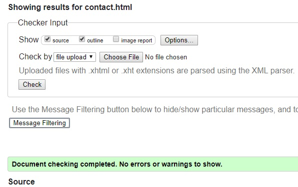
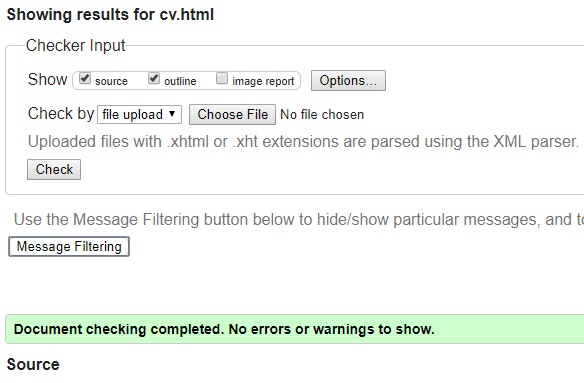
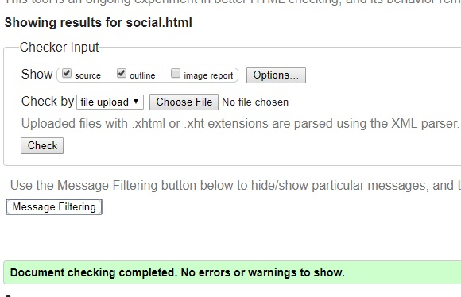
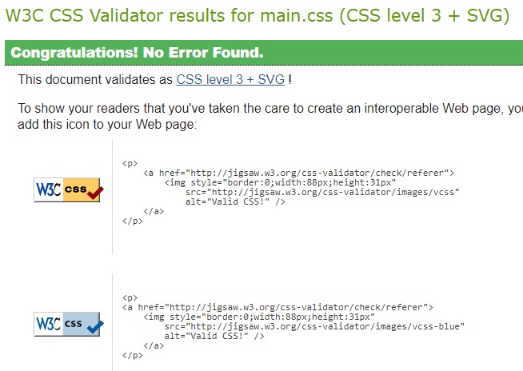
Conclusions:-
During this assessment I tackeled many problems and came to solutions of them. Doing this project was ggod enough and I learned many new thing in HTML and CSS. This helped me increasing my objective knowledge regarding these fields. I will do many other projects like this in future and I wil try to improve the limitation in this design.
References:-
- CodePen. (2018). Slideshow, CSS only. [online] Available at: https://codepen.io/daysahead/pen/mJqBge [Accessed 20 Apr. 2018].
- W3schools.com. (2018). CSS Tutorial. [online] Available at: https://www.w3schools.com/css/ [Accessed 18 Apr. 2018].
- CSS-Tricks. (2018). CSS-Tricks. [online] Available at: https://css-tricks.com [Accessed 15 Apr. 2018].